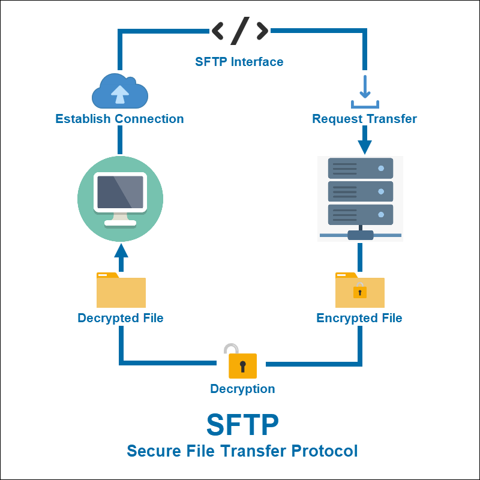

A File Transfer Protocol, vagy rövid nevén FTP TCP/IP hálózatokon mint amilyen az internet is történő állományátvitelre szolgáló szabvány. Az FTP kapcsolat ügyfél/kiszolgáló alapú, vagyis szükség van egy kiszolgáló- (=szerver) és egy ügyfélprogramra (=kliens). Elterjedt protokoll, a legtöbb modern operációs rendszerhez létezik FTP-szerver és kliens program, sok webböngésző is képes FTP-kliensként működni. Az FTP protokoll nem támogat titkosított autentikációt (felhasználó-azonosítást), így nem megbízható hálózaton való használata veszélyes lehet. Ezt küszöböli ki SSL/TLS protokollokkal az FTPS.

A számítástechnikában az SSH fájlátviteli protokoll (más néven Secure File Transfer Protocol vagy SFTP) egy olyan hálózati protokoll, amely fájlelérést, fájlátvitelt és fájlkezelést biztosít bármilyen megbízható adatfolyamon keresztül. Az Internet Engineering Task Force (IETF) tervezte a Secure Shell protokoll (SSH) 2.0 verziójának kiterjesztéseként, hogy biztonságos fájlátviteli képességeket biztosítson. Az IETF internetes tervezetében az áll, hogy bár ez a protokoll az SSH-2 protokoll kontextusában kerül leírásra, számos különböző alkalmazásban használható, például biztonságos fájlátvitelre a Transport Layer Security (TLS) protokollon keresztül és a VPN-alkalmazásokban a kezelési információk átvitelére. Ez a protokoll feltételezi, hogy biztonságos csatornán, például SSH-n keresztül fut, hogy a kiszolgáló már hitelesítette az ügyfelet, és hogy az ügyfél felhasználójának személyazonossága a protokoll számára elérhető. Az SFTP kliens extra képességei közé tartozik a megszakadt átvitel folytatása, a könyvtárak listázása és a távoli fájlok eltávolítása. Az SFTP megpróbál platformfüggetlenebb lenni, mint az SCP; az SCP esetében például az ügyfél által megadott vadkártyák kiterjesztése a kiszolgálótól függ, míg az SFTP felépítése elkerüli ezt a problémát.Az SFTP protokollban a fájlátvitel könnyen befejezhető anélkül, hogy a munkamenetet meg kellene szakítani, mint más mechanizmusok esetében. Az SFTP nem az SSH-n keresztül futtatott FTP, hanem egy új protokoll, amelyet az IETF SECSH munkacsoportja az alapoktól kezdve tervezett. Néha összetévesztik a Simple File Transfer Protocol protokollal. Maga a protokoll nem biztosítja a hitelesítést és a biztonságot; elvárja, hogy az alapul szolgáló protokoll biztosítsa ezt. Az SFTP-t leggyakrabban az SSH protokoll 2-es verziójú implementációinak alrendszereként használják. Lehetséges azonban SSH-1 protokollon vagy más adatfolyamokon keresztül is futtatni.. Az SSH-1 kiszolgálóhoz csatlakozni kívánó SFTP-kliensnek ismernie kell az SFTP-kiszolgáló binárisának elérési útvonalát a kiszolgálói oldalon. A feltöltött fájlokat alapvető attribútumaikkal, például időbélyegekkel lehet társítani. Ez előnyt jelent az általános FTP protokollal szemben.
Bár mind az FTP-t, mind az SFTP-t fájlátvitelre használják, van köztük néhány alapvető különbség: